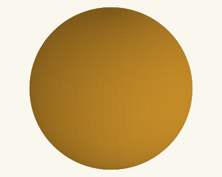
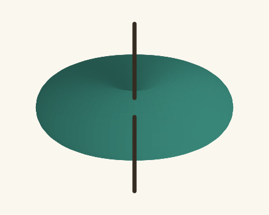

Cuando buscas una antena para tu radio VHF o UHF, puedes encontrar anuncios que dicen 8 dBi y otros 6 dBd. ¿Cuál tiene más ganancia?
Aunque 8 parezca mejor que 6, las letras que acompañan al número importan: dBi y dBd usan referencias distintas para expresar la ganancia.
Primero, las dos referencias
El patrón de radiación es un dibujo que muestra hacia dónde una antena envía más o menos señal. Estas dos formas ayudan a entender las letras:
La «i» de dBi
Isotrópica: una esfera

Imagina un punto que envía señal por igual hacia todos lados: al frente, atrás, arriba y abajo.
Se llama antena isotrópica. Es una referencia teórica, no una antena que puedas comprar. Su ganancia de referencia es 0 dBi.
La «d» de dBd
Dipolo vertical: una rosquilla

El dipolo tiene dos brazos alineados. Puesto verticalmente, envía más señal hacia el horizonte, alrededor de la antena, y menos al acercarse a sus puntas: justo sobre su eje idealmente no irradia.
La referencia de dBd es un dipolo de media onda: aproximadamente 1 metro de largo total en 144 MHz, o 33 cm en 433 MHz.
Dibujos de patrones ideales en espacio libre, cada uno ajustado a su propio máximo para comparar la forma. No representan distancias de alcance ni el tamaño físico de las antenas. El suelo y los objetos cercanos pueden cambiar el patrón real.
El dipolo ideal concentra más señal hacia el horizonte que la isotrópica. En esa dirección, 0 dBd equivale a 2,15 dBi. De ahí sale la diferencia entre ambas referencias.
La antena no cambia. Solo cambia la referencia con la que expresamos su ganancia.
El mismo valor, escrito de dos maneras
Si una antena anuncia 6 dBd, podemos expresar esa misma ganancia así:
Es la misma ganancia, no dos antenas diferentes. Sumamos 2,15 al valor en dBd para obtener el valor en dBi.
Ahora volvamos al ejemplo inicial: una antena de 8 dBi y otra de 6 dBd (8,15 dBi), comparadas en la misma banda, declaran ganancias prácticamente iguales. El número más grande del anuncio no basta para elegir.
Más ganancia no significa mejor cobertura en todas partes
Una antena pasiva, como las que conectamos normalmente a nuestras radios, no crea potencia adicional: distribuye la energía favoreciendo determinadas direcciones.
Ilumina más intensamente hacia un sector, pero cubre menos ángulo. Con una antena ocurre algo parecido: más ganancia puede favorecer una dirección y reducir la cobertura hacia otras.
Por eso conviene mirar el patrón de radiación y pensar dónde estás y con quién quieres comunicarte.
Antes de comprar una antena VHF/UHF
- Compara la misma banda: la ganancia indicada para UHF no necesariamente es la misma en VHF.
- Revisa las letras: si el anuncio solo dice «8 dB», pide que aclaren si son dBi o dBd.
- Consulta la ficha del fabricante: busca datos que respalden lo que anuncia el vendedor.